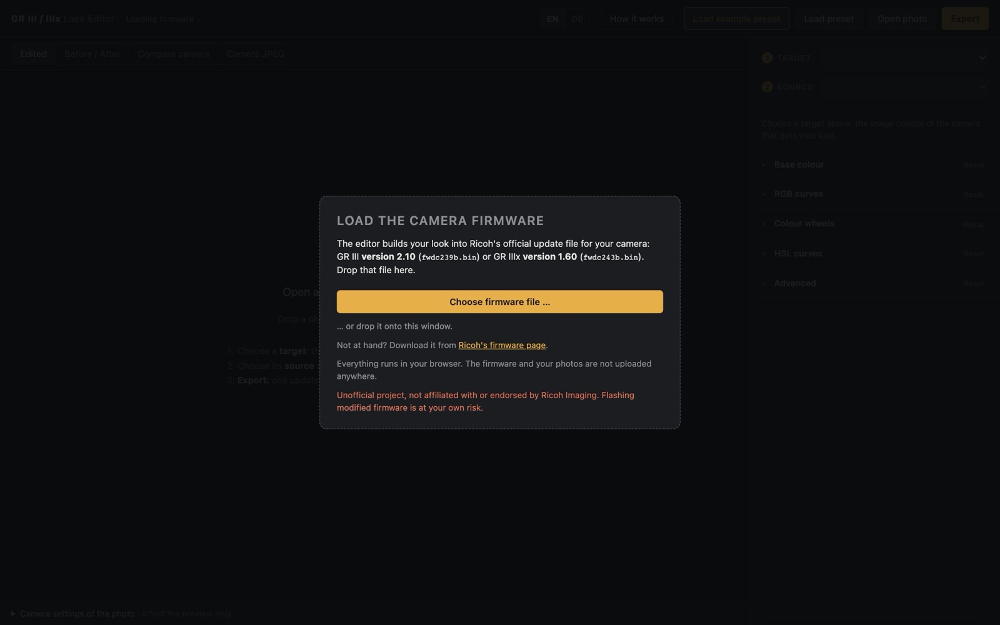
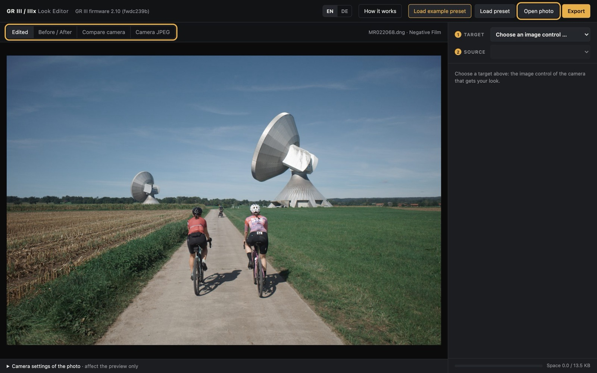
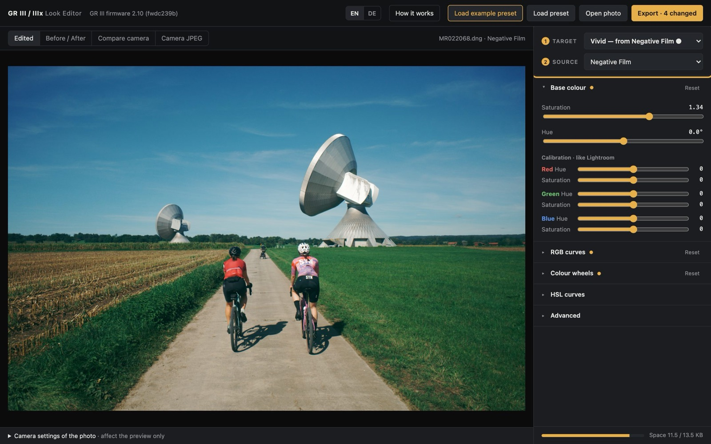
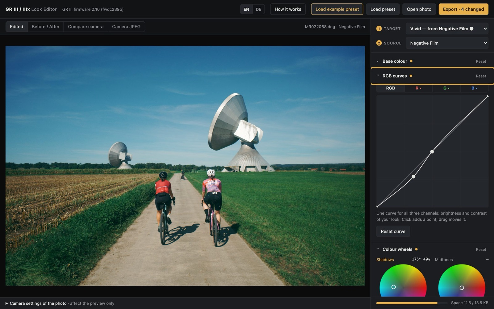
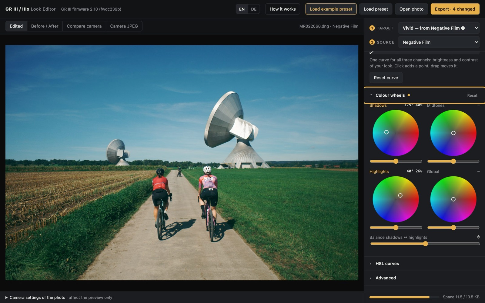
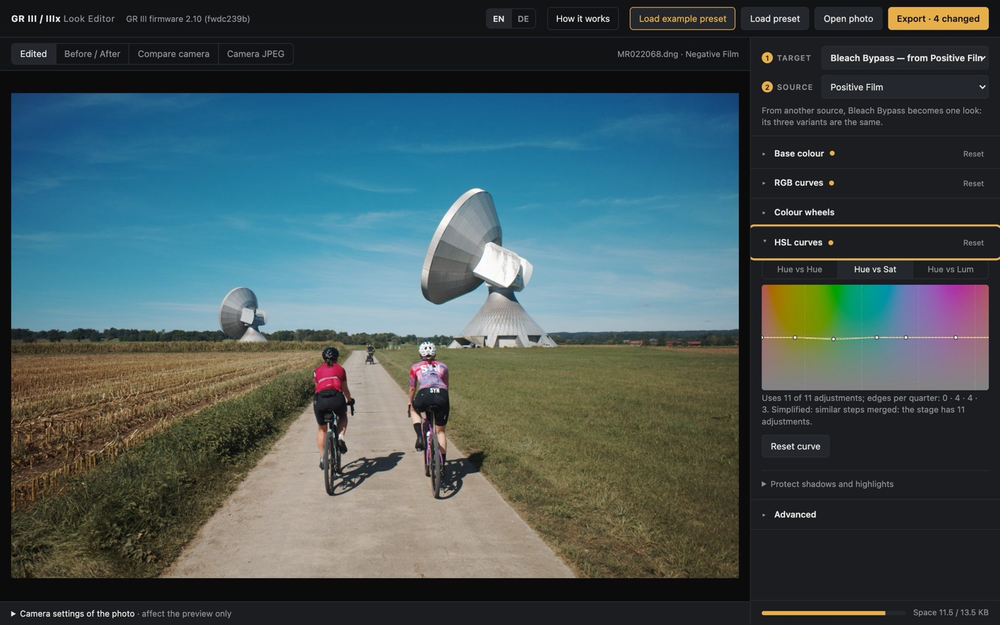
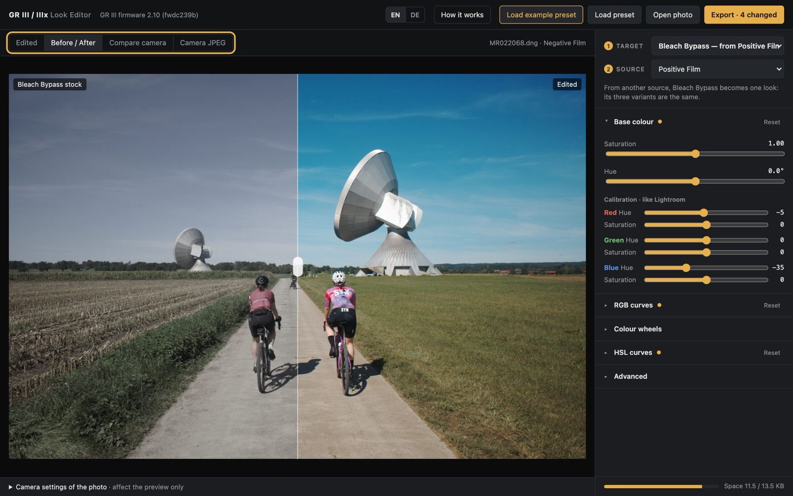
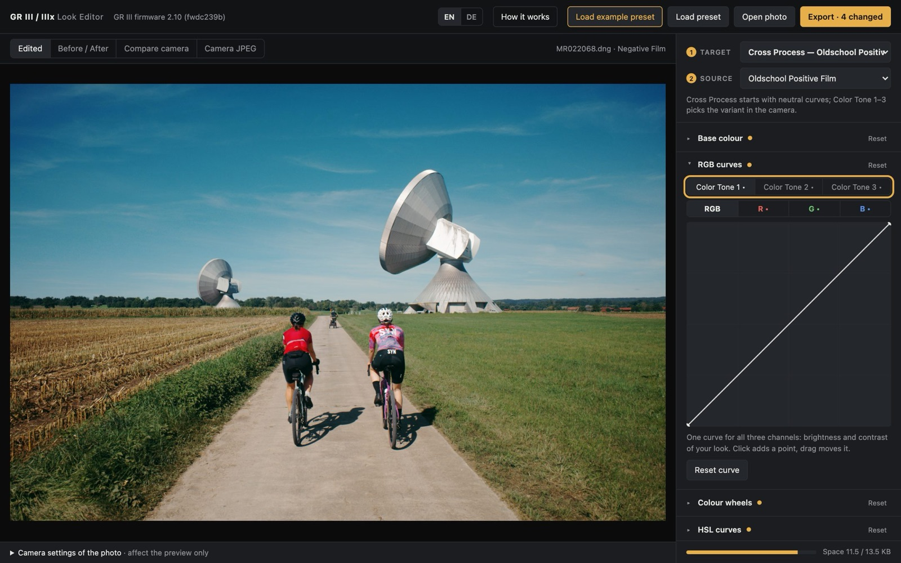
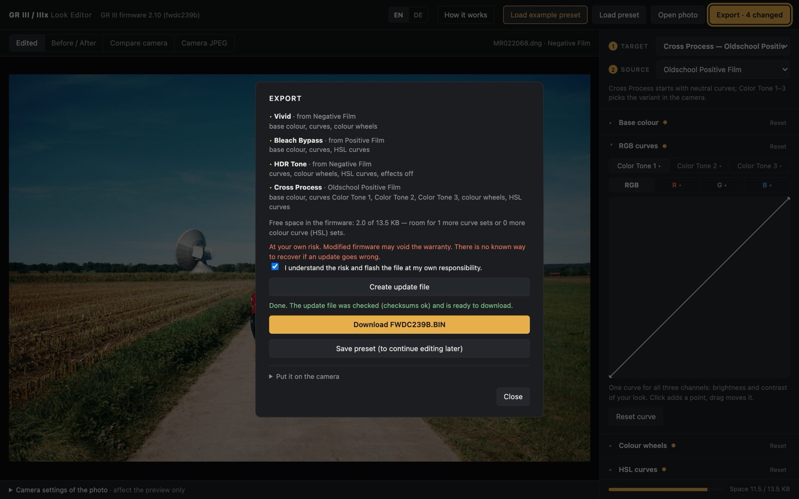

Your own looks on the GR III
The four looks of this tutorial
1Load the camera firmware

2Open a photo

3Choose a target and a source

4Shape the look



5Compare

6More targets, Cross Process variants

7Export
